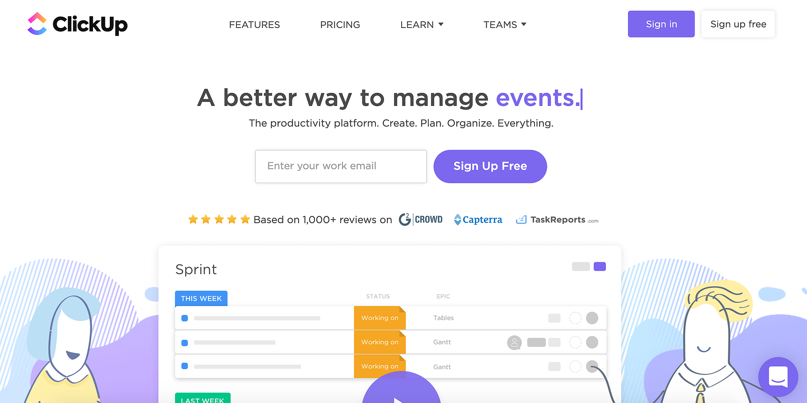
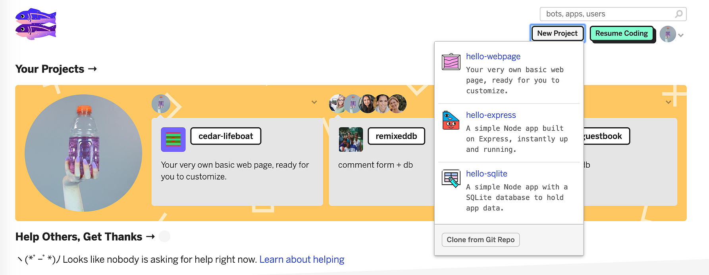

A Great American MVP
This post serves as a log relaying our experiences as entry-level front end developers, co-working remotely to produce an MVP using human-centered design principles. Please find an outline of the tolls we mentioned at the end of the article.
As students, our task seemed simple enough - to create an MVP (minimum viable product) as a team. A minimum viable product sits somewhere between a prototype and an actual functioning app or website; it is functional enough to demonstrate potential usage, but not developed enough to be using too much cost associated with many development hours or dependencies.
This seems straightforward, but something that we struggled with as students and collaborators. How can we show a client a product that works enough to demonstrate functionality, but isn’t over our heads in terms of coding skill required (very new front-end students)? What is a level of functionality, fake or not, that will let us flex some coding skills but also be able to be completed in a very short sprint timeline?
There were additional roadblocks ahead. Perhaps some would consider our team lucky to only span one continent of timezones. Members of our group live all over the country, and as primary caregivers, we had to navigate childcare schedules as well.
Our first step was to establish when we would all be able to communicate. There was one hour at night (Eastern Time) when we decided to host our nightly standup meetings that worked for all involved and included minimal child disruptions. We knew we had to rely heavily on web-based communication, and we selected ClickUp a as a project management app. For everyday communication we used Slack. Finally, for video messaging we used Whereby, which has a pretty nice screen share feature.
After initial client meetings, we took to the whiteboard (Miro) and graphed our client needs and audience using an empathy map and a target audience grid. We used a human-centered design process, so we developed a survey using Google Forms and distributed it via social media such as Twitter, Facebook, Linkedin, and Instagram.
We received our results and met again to do a virtual whiteboard pre-ideation discussion, aka brainstorming session. Once we had a few ideas in place, we analyzed them using a clever value and effort grid to establish if the projects would hit both our targets of providing value to the client and also being realistic in terms of the effort that we were able to exert.
We had a very straightforward idea - imagine a blog with a few very straightforward blog-like functions. We mocked-up this two page wireframe in Figma, which also has amazing team features, although the UI has a bit of a learning curve for those not familiar with design software.
Once framed, we realized that our project needed to take in data, and also display it. As beginner front-end developers, we weren’t entirely comfortable with the idea of a database. Glitch.com has an awesome Node.js and SQLite starter file, and we were able to create a persistent database on a single page.
Glitch.com is an amazingly cool website with a really awesome community. Start building with Node.js and SQLite already set up! Plus, really rad design for 90s kids like me.
We realized, however that our javascript skills were not as mature as what was needed to develop a multi-page form system that this project required. A few other javascript hiccups and the fact that there are no forking options on Glitch made dividing the project load a little challenging. We were led to the decision to abandon this project and take a different approach. We went full-stack.
As newly hatched front-end developers we had never been advised to “never go full-stack”, and after a weekend debacle of wasted hours that could not have been choreographed more comically then Ben Stiller himself, we realized that a Ruby project with a PostreSQL database was not for us. Only two members of our team could even get Ruby to work on their machines, and as a democratic peoples, this was not a workable solution, even if a database would have just solved all of our problems.
Enter the happy medium solution - a completely fake front-end only solution using just HTML, CSS, and JavaScript. Under the advice of a mentor, we decided to start very simply. Time permitting we would then be able to add more back-end features, but we would always have an existent frame to demo and show our client. For MVP purposes, fake is ok, as long as it portrays an idea appropriately.
We were relieved with this solution until one group member (surely not the author of this post!) basically broke the project's GitHub repository twice in 24 hours. But that is a story for the sequel.
While we were developing this front end, we began a draft of our demo video script, including voice-over scripts and shot descriptions. We also began an outline for a final presentation to other students and the client. We plan to use Loom to record our demo video.
At this point, we are far from the finish line, which is 8 days away. Many more things will break, but it has taken these breaks to remind us that sometimes simple is best. Starting simple and building on complexity will be the moral that I’m taking away from this experience and hope to apply it to other future builds.
PM & Communication
- Whereby
- ClickUp
- Slack
Human-Centered Design Tools
- Google Forms
- Empathy Map
- Stakeholder Map
- Miro
Wireframing
- Figma
Coding Resources
- Glitch.com
- GitHub
- VSCode
- Ruby
Other
- Loom
- PostgreSQL

Kate Hansen
Kate Hansen is a new-media artist and front-end web developer who is committed to efficient and aesthetically relevant solutions. Her interested in web development began during her tenure as a Project Manager at the Office of Public Art where she led the redesign of a free database of local visual, literary, and performing artists. During her time as a stay-at-home mom, Kate has graduated from Academy Pittsburgh, a full-stack coding bootcamp, and is currently working as a freelance web developer with a local artist to document her time in-residence with a refugee community in Pittsburgh.Learn Digital Skills
Find out when the next cohort begins!
The most comprehensive program to up your game in the remote career world.
Learn More